Craft Notables¶
225 craft notables, grouped by profession. Every craft notable offers mastery options: they are listed under Craft Masteries.
Beekeeper¶
| Name | Sector | Effect | |
|---|---|---|---|
| Beekeeping speed | Forge | 15% increased hive and sap extractor filling speed | |
| Beekeeping speed | Road | 15% increased hive and sap extractor filling speed | |
| Beekeeping speed | Road | 15% increased hive and sap extractor filling speed | |
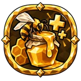 |
Extra honey | Forge | +5% chance for extra honey and resins |
| Extra honey | Forge | +5% chance for extra honey and resins | |
| Extra honey | Road | +5% chance for extra honey and resins | |
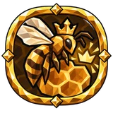 |
Extra queen on harvest | Forge | +5% chance for extra bee |
| Extra queen on harvest | Forge | +5% chance for extra bee | |
| Extra queen on harvest | Forge | +5% chance for extra bee | |
| Extra queen on harvest | Road | +5% chance for extra bee | |
| Honey nourishment | Forge | 15% increased hive honey potency | |
| Honey nourishment | Road | 15% increased hive honey potency |
Builder¶
| Name | Sector | Effect | |
|---|---|---|---|
| Building cost | Beast | +15% building cost reduction | |
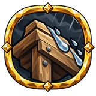 |
Building rain damage resistance | Beast | +25% rain resistance of buildings |
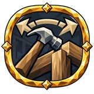 |
Building range | Table | +5 m build range |
| Built shelter comfort | Beast | +3 comfort level | |
| Built structure durability | Beast | 15% increased building and pure-wood equipment durability | |
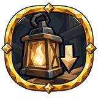 |
Light source fuel consumption | Table | −25% fuel consumption of light sources you built |
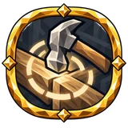 |
Wide Mending | Table | +4 m repair radius |
| Wood recovery on salvage | Table | +8% chance to recover each lost unit of wood on salvage | |
| Wood recovery on salvage | Beast | +8% chance to recover each lost unit of wood on salvage | |
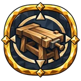 |
Workbench range | Beast | 25% increased workbench build range |
Cook¶
| Name | Sector | Effect | |
|---|---|---|---|
| Abundant Cook | Road | +5% chance for extra meal +8% chance to save materials when cooking |
|
| Chance to Save ingredients on Cooking | Mead and Herbs | +8% chance to save materials when cooking | |
| Cooking speed | Road | 13% increased cooking speed | |
| Cooking speed | Road | 13% increased cooking speed | |
| Cooking speed | Mead and Herbs | 13% increased cooking speed | |
| Crafted food duration | Road | 15% increased cooked food duration | |
| Crafted food duration | Mead and Herbs | 15% increased cooked food duration | |
| Crafted food duration | Mead and Herbs | 15% increased cooked food duration | |
| Crafted food nourishment | Road | 15% increased cooked food potency | |
| Crafted food nourishment | Mead and Herbs | 15% increased cooked food potency | |
| Extra meal on cook | Mead and Herbs | +5% chance for extra meal |
Farmer¶
| Name | Sector | Effect | |
|---|---|---|---|
| Chance to Save seed on Planting | Mead and Herbs | +8% chance to save materials when planting | |
| Chance to Save seed on Planting | Road | +8% chance to save materials when planting | |
| Chance to Save seed on Planting | Road | +8% chance to save materials when planting | |
| Chance to Save seed on Planting | Road | +8% chance to save materials when planting | |
| Cultivating stamina cost | Mead and Herbs | 10% reduced cultivator stamina cost | |
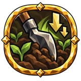 |
Extra crop | Road | +5% chance for extra crop |
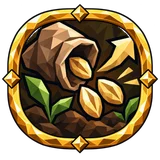 |
Extra seed on harvest | Mead and Herbs | +5% chance for extra seed |
| Growth speed | Mead and Herbs | 15% increased crop growth speed | |
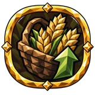 |
Harvest capacity | Road | 40% increased harvest capacity |
| Scythe area | Mead and Herbs | 15% increased scythe area of effect | |
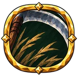 |
Scythe stamina cost | Mead and Herbs | 10% reduced scythe stamina cost |
| Scythe swing speed | Mead and Herbs | 10% increased scythe attack speed |
Fisher¶
| Name | Sector | Effect | |
|---|---|---|---|
| Angler's Craft | Road | ||
| Chance for Treasure on Fishing | Road | +8% catch treasure | |
| Chance for Treasure on Fishing | Road | +8% catch treasure | |
| Chance for Treasure on Fishing | Mead and Herbs | +8% catch treasure | |
| Chance to Bite on Fishing | Mead and Herbs | +10% bite chance | |
| Chance to Save bait on Fishing | Road | +8% chance to save materials when fishing | |
| Extra fish per Rested charge | Mead and Herbs | +1% chance to catch an extra fish per Rested charge | |
| Fishing stamina cost | Road | 10% reduced fishing stamina cost | |
| Fishing stamina cost | Road | 10% reduced fishing stamina cost | |
| Fishing stamina cost | Road | 10% reduced fishing stamina cost | |
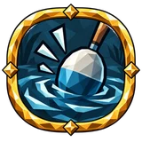 |
Generous Waters | Mead and Herbs | +5% chance for extra fish 15% increased reeling speed |
| Patient Angler | Mead and Herbs | +10% bite chance 15% increased reeling speed |
Forager¶
| Name | Sector | Effect | |
|---|---|---|---|
| Extra forage | Forge | +5% chance for extra forage | |
| Extra forage | Road | +5% chance for extra forage | |
| Extra forage | Forge | +5% chance for extra forage | |
| Forage capacity | Road | 20% increased forage capacity | |
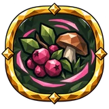 |
Foraging area | Road | +3 m mass gathering radius |
| Forest Bounty | Road | +5% chance for extra forage 20% increased forage capacity |
|
| Pickup radius | Road | 20% increased item pickup range | |
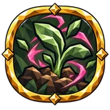 |
Wild Growth | Forge | 20% increased item pickup range 20% increased regrowth speed |
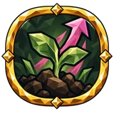 |
Wild regrowth speed | Forge | 20% increased regrowth speed |
Headhunter¶
| Name | Sector | Effect | |
|---|---|---|---|
(unnamed) own1253 |
Timber | ||
(unnamed) own276 |
Forge | ||
(unnamed) own461 |
Timber | ||
(unnamed) own471 |
Timber | ||
(unnamed) own856 |
Timber | ||
(unnamed) own857 |
Timber | ||
(unnamed) own871 |
Forge | ||
(unnamed) own892 |
Timber | ||
(unnamed) own893 |
Timber | ||
(unnamed) own894 |
Timber |
Herder¶
| Name | Sector | Effect | |
|---|---|---|---|
| Animal Keeper | Mead and Herbs | 15% increased taming speed 15% increased fed animal duration |
|
| Fed duration | Mead and Herbs | 15% increased fed animal duration | |
| Fed duration | Table | 15% increased fed animal duration | |
| Fed duration | Table | 15% increased fed animal duration | |
| Offspring chance | Table | 15% increased offspring chance for tamed animals | |
| Offspring chance | Mead and Herbs | 15% increased offspring chance for tamed animals | |
| Offspring chance | Table | 15% increased offspring chance for tamed animals | |
| Taming speed | Mead and Herbs | 15% increased taming speed |
Hunter¶
| Name | Sector | Effect | |
|---|---|---|---|
| Ammunition capacity | Mead and Herbs | 25% increased ammo capacity | |
| Ammunition capacity | Table | 25% increased ammo capacity | |
| Chance to Save materials on Fletching | Mead and Herbs | +8% chance to save materials when fletching | |
| Extra ammo on craft | Mead and Herbs | +8% chance for extra ammo | |
| Extra ammo on craft | Table | +8% chance for extra ammo | |
| Extra game on kill | Mead and Herbs | +5% chance for extra hide | |
| Extra game on kill | Table | +5% chance for extra hide | |
| Fletching speed | Mead and Herbs | 20% increased fletching speed | |
| Game capacity | Mead and Herbs | 50% increased game capacity | |
| Game materials weight | Mead and Herbs | 15% reduced game weight | |
| Noise | Mead and Herbs | 10% reduced noise | |
| Noise | Table | 10% reduced noise |
Mead brewer¶
| Name | Sector | Effect | |
|---|---|---|---|
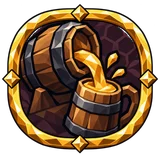 |
Brewing speed | Road | 15% increased fermentation speed |
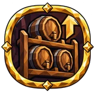 |
Cellar Racks | Forge | 25% increased mead capacity |
| Cellar Racks | Road | 25% increased mead capacity | |
| Cellar Racks | Forge | 25% increased oil capacity | |
| Cellar Racks | Road | 25% increased oil capacity | |
| Chance to Save ingredients on Brewing | Road | +8% chance to save materials when brewing | |
| Extra mead on brew | Road | +5% chance for extra fermented mead | |
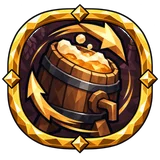 |
Extra mead on brew | Road | +5% chance for extra fermented mead |
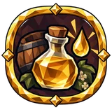 |
Extra oil on brew | Forge | +5% chance for extra oil |
| Extra oil on brew | Road | +5% chance for extra oil | |
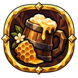 |
Mead Craft | Forge | 15% increased brewed mead potency |
| Mead Craft | Forge | 20% increased brewed mead duration | |
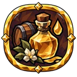 |
Oil Craft | Forge | 15% increased brewed oil potency |
| Oil Craft | Forge | 15% increased brewed oil potency | |
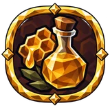 |
Oil Craft | Road | 20% increased brewed oil duration |
| Oil Craft | Forge | 20% increased brewed oil duration |
Miner¶
| Name | Sector | Effect | |
|---|---|---|---|
| Carry weight | Timber | +30 carry weight | |
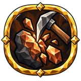 |
Chance to Shatter ore on Mining | Beast | +5% chance to finish in one hit when mining an ore vein |
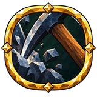 |
Digging area | Beast | 25% increased pickaxe area of effect |
| Extra ore on mine | Beast | +5% chance for extra ore | |
| Fault Lines | Timber | +1 weak spots on a deposit at once | |
| Keen Eye | Timber | +1 weak spots on a deposit at once | |
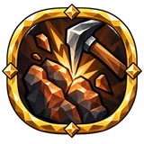 |
Keen Strike | Beast | +10% mining critical strike chance |
| Keen Strike | Beast | +25% mining critical strike damage | |
| Mining area | Beast | Deal 20% of hit damage to nearby enemies when mining | |
| Mining damage | Beast | 30% increased damage against ore | |
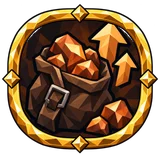 |
Ore Hauler | Timber | +30 carry weight +5% chance for extra ore |
| Ore Hauling | Timber | 50% increased ore capacity | |
| Ore Hauling | Timber | 15% reduced ore, bar and stone weight | |
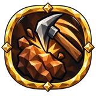 |
Steady Pick | Timber | 13% increased mining attack speed |
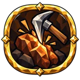 |
Steady Pick | Timber | 10% reduced mining stamina cost |
| Weak spot duration | Timber | +20% time before a weak spot closes | |
| Weak spot rate | Timber | +25% weak spot appearance rate | |
| Weak spot rate | Timber | +25% weak spot appearance rate | |
| Weak spot size | Timber | +20% weak spot size |
Pathfinder¶
| Name | Sector | Effect | |
|---|---|---|---|
| Comfort by the fire | Forge | +2 comfort level near a lit fire | |
| Comfort by the fire | Timber | +2 comfort level near a lit fire | |
| Comfort by the fire | Forge | +2 comfort level near a lit fire | |
| Corpse Run effect | Forge | +25% effect of Corpse Run | |
| Corpse Run effect | Forge | +25% effect of Corpse Run | |
| Corpse Run effect | Timber | +25% effect of Corpse Run | |
| Jump stamina cost | Timber | 10% reduced jump stamina cost | |
| Map reveal radius | Timber | 10% increased map reveal range | |
| Map reveal radius | Timber | 10% increased map reveal range | |
| Movement speed | Forge | 5% increased movement speed | |
| Movement speed | Timber | 5% increased movement speed | |
| Rune sight range | Timber | 25% increased rune monolith sensing range | |
| Soft Landing | Timber | 8% reduced fall damage | |
| Soft Landing | Timber | 8% reduced fall damage | |
| Spring Step | Timber | 10% increased jump height | |
| Swimmer | Timber | 10% reduced swimming stamina cost | |
| Swimmer | Timber | 10% increased swim speed |
Relic seeker¶
| Name | Sector | Effect | |
|---|---|---|---|
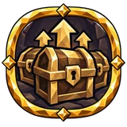 |
Chest item quantity | Forge | 15% increased chest item quantity |
| Chest item rarity | Forge | 15% increased chest item rarity | |
| Extra dungeon loot | Forge | +8% chance for extra pickup in dungeons | |
| Item quantity | Timber | 5% increased item quantity | |
| Item quantity | Forge | 5% increased item quantity | |
| Item quantity | Timber | 5% increased item quantity | |
| Item rarity | Forge | 10% increased item rarity | |
| Lantern Keeper | Timber | 10% increased torch burn duration | |
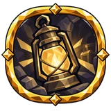 |
Lantern Keeper | Timber | 10% increased light radius of a carried torch or lantern |
| Relic Seeker | Forge | 10% increased item rarity +8% chance for extra pickup in dungeons |
|
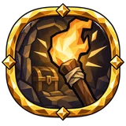 |
Torch comfort | Forge | +2 comfort level with a lit torch or lantern on you or nearby |
Runecarver¶
| Name | Sector | Effect | |
|---|---|---|---|
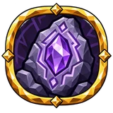 |
Carry weight | Beast | +30 carry weight |
| Divine socket | Timber | +5% chance for divine socket | |
| Extra azurite | Beast | +5% chance for extra azurite | |
| Extra rune | Timber | +5% chance for extra rune | |
| Rare affixes | Timber | 10% increased rune-crafted affix rarity | |
| Rich dust | Beast | +5% chance for extra azurite dust |
Shipwright¶
| Name | Sector | Effect | |
|---|---|---|---|
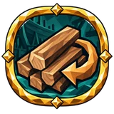 |
Chance to Save materials on Shipbuilding | Table | +8% chance to save materials when shipbuilding |
| Fair Wind | Beast | +15% chance for a light tailwind | |
| Fair Wind | Beast | +15% effect of any tailwind | |
| Guarded Hull | Beast | 15% increased built ship durability | |
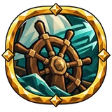 |
Helmsman | Table | 10% increased ship speed |
| Helmsman | Table | 10% increased ship speed | |
| Helmsman | Beast | 10% increased ship handling | |
| Helmsman | Table | 10% increased ship handling | |
| Helmsman | Table | 10% increased ship speed | |
| Helmsman | Beast | 10% increased ship speed | |
| Helmsman | Table | 10% increased ship handling | |
| Helmsman | Table | 10% increased ship handling | |
| Load-bearing Hull | Table | +30 carry weight +10% speed of ships you built |
|
| Master Hull | Table | +10% speed of ships you built | |
| Master Hull | Table | +12% handling of ships you built | |
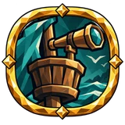 |
Sea Watch | Table | +8% chance for extra fish while aboard a ship |
| Sea Watch | Table | 15% increased map reveal range while aboard a ship | |
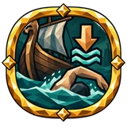 |
Sea Watch | Table | 15% reduced swimming stamina cost near your ship |
| Swimming stamina cost near Ship | Beast | 15% reduced swimming stamina cost near your ship |
Smith¶
| Name | Sector | Effect | |
|---|---|---|---|
| Bar capacity | Timber | 40% increased bar capacity | |
| Crafted Smith equipment durability | Beast | 15% increased crafted Smith equipment durability | |
| Crafted Smith equipment durability | Timber | 15% increased crafted Smith equipment durability | |
| Extra bar on smelt | Beast | +5% chance for extra bar | |
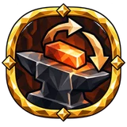 |
Metal recovery on salvage | Timber | +8% chance to recover each lost unit of metal on salvage |
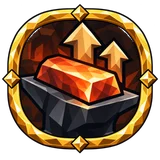 |
Smelting materials weight | Timber | 15% reduced bar and coal weight |
| Smelting speed | Timber | 20% increased smelting and kiln speed | |
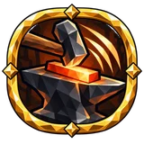 |
Smith equipment crafting speed | Beast | 20% increased Smith crafting speed |
| Smith equipment crafting speed | Beast | 20% increased Smith crafting speed +8% chance to recover each lost unit of metal on salvage |
|
| Smith equipment extra quality | Beast | +5% chance for extra quality when crafting or upgrading Smith equipment |
Tanner¶
Woodcutter¶
| Name | Sector | Effect | |
|---|---|---|---|
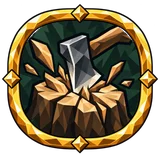 |
Chance to Shatter tree on Chopping | Beast | +5% chance to finish in one hit when chopping a tree |
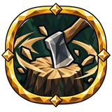 |
Chopping area | Beast | Deal 20% of hit damage to nearby enemies when chopping |
| Chopping speed | Beast | 13% increased chopping attack speed | |
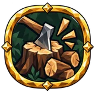 |
Extra log on chop | Table | +5% chance for extra log |
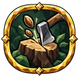 |
Extra seed on chop | Table | +5% wild seed |
| Feller's Craft | Beast | ||
| Heavy Fall | Beast | 30% increased damage against trees | |
| Heavy Fall | Table | 30% increased damage against trees | |
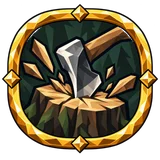 |
Heavy Fall | Beast | 25% increased falling tree damage |
| Heavy Fall | Beast | 25% increased falling tree damage | |
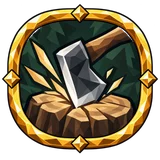 |
Keen Edge | Beast | +10% chopping critical strike chance |
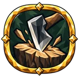 |
Keen Edge | Beast | +25% chopping critical strike damage |
| Steady Hands | Table | +25% chopping series timing window | |
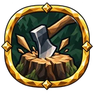 |
Timber Hauler | Beast | +5% chance for extra log 10% increased cart handling ease |
| Timber Hauling | Beast | 50% increased wood capacity | |
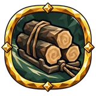 |
Timber Hauling | Beast | 15% reduced wood weight |
Uncategorized¶
| Name | Sector | Effect | |
|---|---|---|---|
| Azurite hauling | Beast | 15% reduced azurite, azurite dust and rune weight | |
| Extra socket | Timber | +5% chance for extra socket | |
| Higher affix tiers | Timber | 10% increased rune-crafted affix tier | |
| Thrifty carving | Timber | 7.5% reduced rune crafting cost |
Data from Path of Valheiman 5.3.6, extracted 2026-10-27.